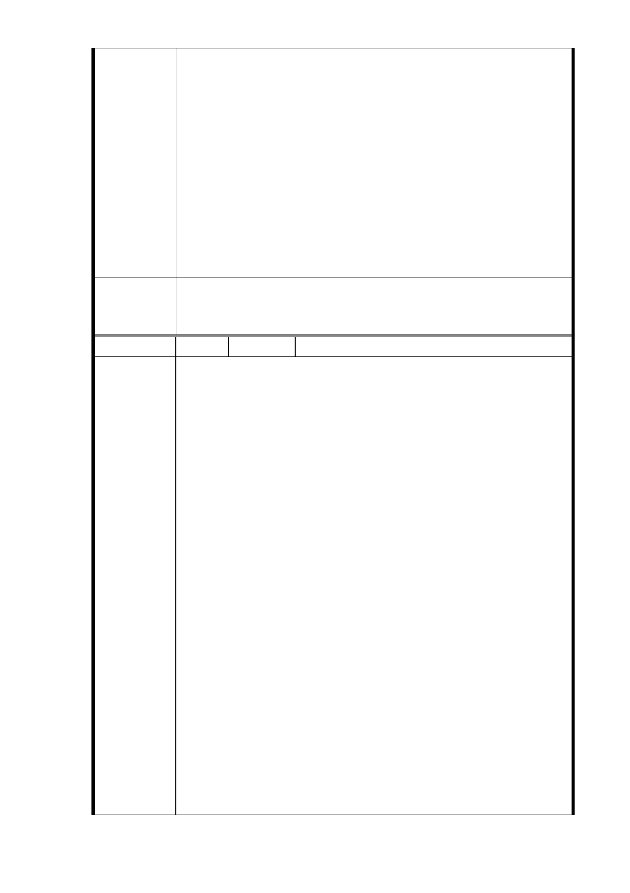

模及分配比例等)，評選出第一優先順位申請人於簽約後
為投資人，投資人使用之建材及其設計，均需經本局審
核後方可請照施工，另開發建物完工移轉至地主後，依
投資契約亦有其相關保固約定，以顧及土地所有權人應
有權益。
七、依 103 年 2 月 21 日本計畫都市計畫委員會第 5 次專案小
組審查意見略以：「本案用地變更部分同意依市府捷運局
於簡報中所擬建議，即『R04 站北側捷一用地，採設置捷
運必要設施出入口最小用地面積 510 ㎡之替代方案取得
用地，並辦理土地開發』….續提委員會（大會）審議。」
就本基地之情形，捷運工程局會在都市計畫委員會中報
告，惟仍應依都市計畫委員會審議決議辦理。
委員會決
議
一、R04 站北側捷一用地，採設置捷運必要設施出入口最小
用地面積 510 ㎡之替代方案取得用地，並辦理土地開發。
二、同「市府回應意見」。
編 號 16-2 陳情人 鍾志成等 8 人（R04）
主旨：臺北市捷運信義線東延段信義路六段 R4 站用地，市府
計畫北側捷一用地採必要設施出入口最小用地面積
510 ㎡五樓之建物替代方案，並辦理土地開發。
該房地所有權人多不表認同，謹建議替代方案暫緩作
業，俟原計畫松臺公寓全部告一段落後再作定奪，以
免造成捷運遺憾，無法彌補重大缺失。
依據：臺北市捷運工程局民國 103 年 3 月 10 日捷規字第
10330732100 號函及臺北市政府民國 103 年 3 月 24 日
府都規字第 10331903100 號函
說明：1.臺北市捷運信義線東延段信義路六段 R4 站用地北側
陳情理由
捷一用地縮小面積 510 ㎡為松臺公寓之一部，屬連
體性（例如所有權人擁有五樓一戶及四樓二戶），
單獨五樓用地開發為出入口，我等原有一樓店面已
不復存在。尤其房旁老舊殘破醜陋的四樓公寓夾雜
捷運出入口，對整體市容景觀造成無比「醜相」，
對捷運信義線宏偉榮耀歷史性百年建設造成重大缺
失。
2.松臺公寓地主代表於民國 103 年 3 月 6 日陳情補充
建議，因無產權住戶無法享有土地開發利益，故堅
決反對聯合開發建議採用與捷運共構爭取捷運獎
勵，產權複雜問題由地主與實施者相互忍讓，讓無
產權住戶分享部分土地開發利益（房屋及車位）。
依據都市更新條例第 39 條及第 41 條之規定辦理，
併同都更計畫再辦理銀行信託以保障建設之實施，
- 64 -